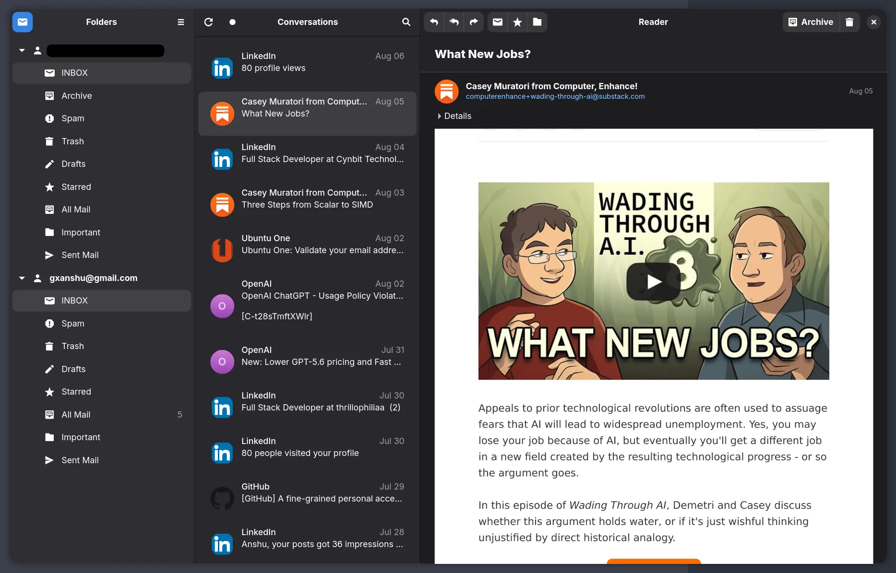
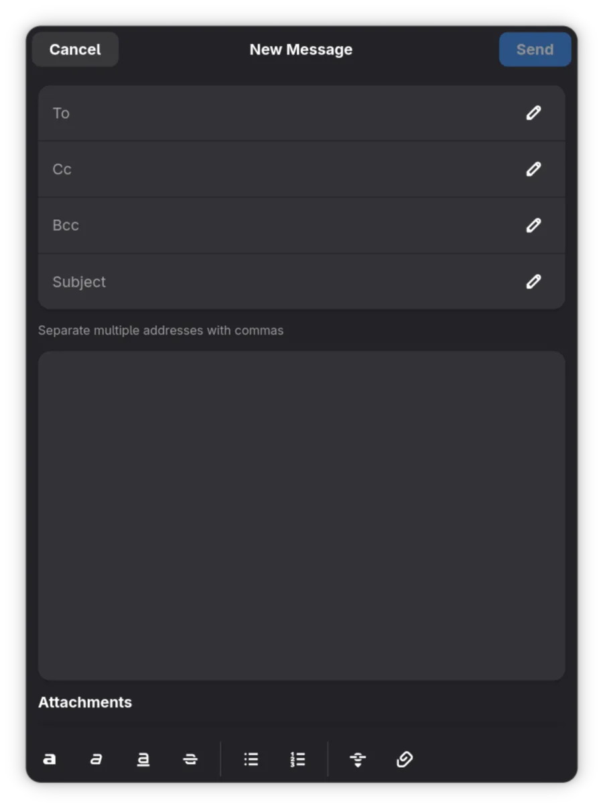
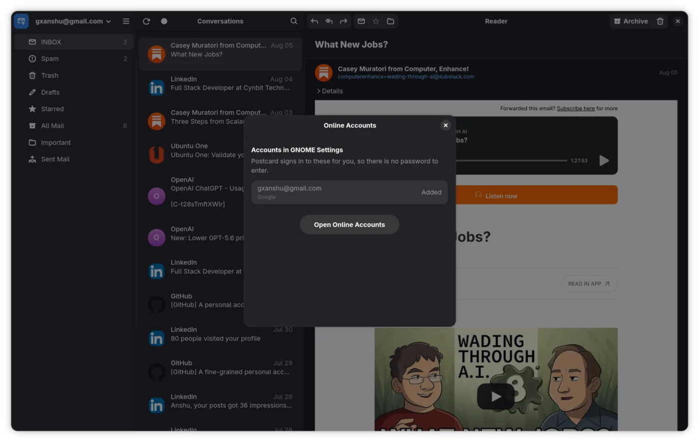
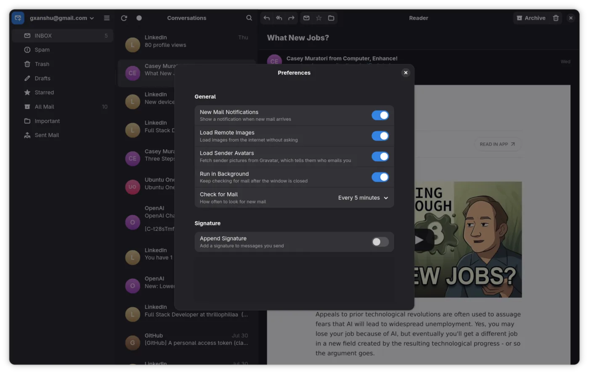
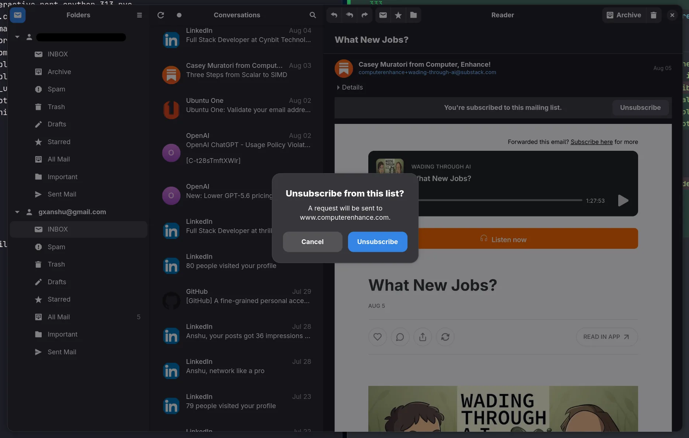

One inbox, every account
All your addresses live in the same sidebar, folders sitting under the account they belong to. No switcher to remember, no going back and forth to find a mail.
Folders on the left, conversations in the middle, the message on the right. The layout you already know, rebuilt on GTK 4 and libadwaita. Nothing new to learn.
Free and open source. GPL-3.0. No account, no telemetry.

Features
All your addresses live in the same sidebar, folders sitting under the account they belong to. No switcher to remember, no going back and forth to find a mail.
Replies stack into one thread. Archive, trash, move, and undo it when you got the wrong one.
Full text search across every account. The index sits on your disk, so there is no round trip to a server.
Mail is cached locally. The inbox opens on a train, on a plane, on hotel wifi that isn't.
Gmail, Fastmail, Proton Bridge, your own server. Add as many as you want. Host and port are filled in from your address for the providers people actually use, and passwords go in the system keyring.
HTML mail renders in WebKit with remote images held back until you say so.
Reply, forward, Cc and Bcc, signatures, rich text. Pick which of your addresses it goes out from, let addresses you have written to before autocomplete, and an Outbox holds the message until it really goes.
Lists get a banner with an Unsubscribe button. Where the list supports it, Postcard sends the request itself, after telling you which host it is about to talk to.
Postcard can start hidden at login, check on your sync interval and notify you when mail lands. The desktop portal writes the autostart entry, so there is no file to edit.
A mailto: link opens the composer with the fields already filled. Attachments open in their default app, dates read like "2h ago", and senders get an avatar.
Screenshots
Adaptive layouts, boxed lists, real dialogs, and the system dark style everywhere. It fits your desktop because it is built the same way.




Under the hood
Every choice here is the dull one. Python and its standard library, SQLite on disk, the widgets libadwaita already ships. No rewrite in C to prove a point.
A mail client has to still work in five years, on a machine nobody has touched. Boring tools are how that happens, and how a stranger can read the code in an afternoon and fix something.
Pick the boring language.
Ship the boring solution.
Read your own mail.
imaplib and smtplib, not a homegrown protocol stack
One file. Everyone already knows how it fails
No custom controls to maintain forever
One build target, the same on every distro
Install · v1.10.0
Postcard ships as a Flatpak straight from its GitHub releases. It is not on Flathub. You need Flatpak, which most GNOME distros already have.
You get a small file called postcard.flatpakref. Open it once it lands and GNOME Software takes over, or whatever app centre your desktop uses. Look it over, hit Install, done.
Download PostcardOpen it from your browser downloads, or find it in Files and double click.
Same package, no clicking. Works over SSH too.
flatpak install --from https://github.com/gxanshu/postcard/releases/latest/download/postcard.flatpakref
After the first install Postcard shows up in your app grid like anything else, and flatpak update keeps it current. Browse all releases →
Before you install
Postcard is under heavy development. It has bugs and rough edges. A bug report is the fastest way to get them fixed.
AI tools help me type this code. That is written in the README rather than hidden away. The architecture, the review and the responsibility are mine, and every line was read before it shipped. Read the source and judge for yourself.
Postcard is free and always will be. If it saves you time, sponsoring keeps the work going.
No. It installs as a Flatpak from the project's GitHub releases, and flatpak update keeps it current like any other app.
Yes. KDE, Xfce, anywhere Flatpak runs. GNOME just fits best, because Online Accounts, notifications, the keyring and the dark style all come for free.
Anything with IMAP and SMTP. Gmail, Fastmail, Zoho, Proton Mail Bridge, a mailbox on your own server. A Google account already in GNOME Settings is picked up without a password.
Nothing. GPL-3.0-or-later, no account to make, no telemetry. Your mail stays on your machine and your server.
Yes. Turn on Keep running in the background and Start at Login in Preferences. Postcard comes up with no window, checks on your sync interval, and notifies you when mail arrives. Click the notification to open it.
I read my own mail in it every day, but it is still early. Keep your old client around for a week or two and file anything that breaks.
One click, about thirty seconds, and it is in your app grid.
Download Postcard v1.10.0